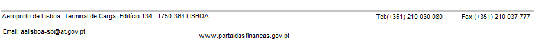

AUTO DE NOTICIA Nº 1990/2012 |
|
Aos 17 dias do mês de Maio de 2012, pelas zero horas e trinta minutos,encontrando-me eu,Zeca Maria Lacerda desempregado,em Serviço na Sala de Controlo de Passageiros e bagagem de alfândega do Aeroporto de Lisboa, compareceu perante mim Eugeniu Ddon, portador do passaporte português n.º L103283, emitido em 01/10/2009, nascido em 01/04/1976 residente na Rua da Alegria, Nº 38 - R/c Drt - 2300-616 Santa Cruz. O passageiro era procedente de Moldávia no voo 9U 895, de contramarca fiscal 01542012018839,em 07.04.2012. Tendo-se apresentado no Canal Verde, foi o mesmo separado para revisão da sua bagagem pelo Joaquim Coves bombeiro, Zeca Afonso Cantor, procedido á sua revisão. Procedeu-se á revisão da referida bagagem, ao abrigo dos artigos n.º 13º e 37.º n.º 1 do Código Aduaneiro Comunitário (CAC), aprovado pelo Reg. (CEE) n.º 2913/, de 12 de Outubro, tendo-se detectado o seguinte: calçado no valor de € 580 (quinhentos e oitenta euros), vestuário no valor de € 2.300 (Dois mil e trezentos euros), Computador portátil no valor de € 3.670 (três mil, seiscentos e setenta euros) e objectos de plástico para culinária no valor de € 420 (quatrocentos e vinte euros). Com a conduta descrita o passageiro evitava o pagamento de € 1.000.00 (extenso) a título de imposições aduaneiras devidas pela introdução em consumo da mercadoria, nos termos do art. 79.º do CAC, de acordo com o mapa da dívida que se anexa e faz parte integrante do presente Auto. Os factos atrás descritos constituem a prática de uma contra-ordenação fiscal aduaneira de descaminho prevista e punível nos termos do art. 108.º conjugado com art. 92º, n.º1, alínea a), ambos do Regime Geral das infracções Tributárias (RGIT), aprovado pela Lei n.º 15/2001, de 5/06, por violação do artigo 40.º do código Aduaneiro Comunitário (CAC), aprovado pelo Reg. (CEE) n.º 2913/92, de 12/10 conjugado com o n.º 2 do 234.º do Reg. (CEE) n.º 2454/93, da Comissão, de 02/07, que fixa as Disposições de Aplicação do código Aduaneiro Comunitário (DACAC), o art.41.º do Regulamento (CE) n.º 1186/2009 do Conselho de 16/11 e ainda do art.116.º da Lei n.º 64-A/2008, de 31/12. Razão pela qual se elaborou o presente auto de Notícia e ao qual corresponde o Processo de Contra-Ordenação n.º 1234/2012. O passageiro declarou que a mercadoria seria destinada a Angola e, como tal, alvo de reexportação, pelo que foi emitido o ticket nº71993, para a mercadoria em causa ficando a mesma sob controlo aduaneiro Ou Foi processada a declaração Verbal n.º 1500, no valor de € 1655, pelo pagamento das imposições aduaneiras devidas pela introdução em consumo da mercadoria Ou Foi emitido o Separado de Bagagem n.º 1755, encontrando-se em curso o prazo para o cumprimento das formalidades aduaneiras previsto na alínea b) do n.º 1 art. 49.º do CAC Foi atribuída franquia aduaneira prevista no Art.º 41.º do Reg.(CEE) 1186/09 do Conselho, de 16 nde Novembro, para outras mercvadorias transportadas pelo passageiro. |
|  |